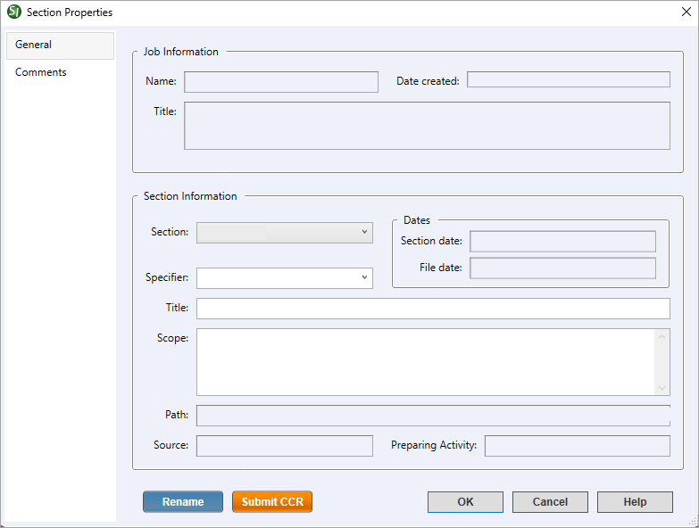

This command can also be executed from the SpecsIntact Explorer's Right-click menu.
The General tab provides key information about the selected Section and the Job or Master it belongs to. While most details are view-only, you can easily update the Section Specifier, Title, and Scope or switch to a different Section within your project using the drop-down list.
 Click the tabbed commands on the image below to see how to use each function.
Click the tabbed commands on the image below to see how to use each function.

- Job or Master Information - Displays the Job or Master Name, Title, and Date created associated with the selected Section. The Name identifies your Job or Master in both the SpecsIntact Explorer and Windows File Explorer and is printed at the top right corner of each page.
- Section Information - Displays the key details pertaining to the selected Section.
- Section - Displays the selected Section number and provides the option to easily switch to a different Section by choosing its number from the drop-down list.
- Dates - Displays the selected Section's creation date or the date of its last major maintenance. The File date indicates the most recent modification.
- Specifier - Provides the flexibility to assign a Specifier to the selected Section by entering the Specifier name or selecting one from the drop-down list. The Section Specifier has priority over Division Specifiers if one was assigned through the Job or Master Properties menu > Specifiers tab. The Section Specifiers can be viewed in the SpecsIntact Explorer's View menu > Columns.
- Title and Scope - Displays the current Title and Section Scope for the selected Section, simultaneously offering the capability to revise this information.
- Path - Displays the exact location of the selected Section, residing within the Working Directory on your local system or network.
- Source - The displayed Source name indicates the Job or Master from which the Section was copied, if known.
- Preparing Activity - Displays the Preparing Activity of the agency responsible for the maintenance of the selected Section.
- Rename button - Opens the Sections menu > Rename window so you can change the number of the selected Section.
- Submit CCR button - Opens the Whole Building Design Guides (WBDG) Website's UFGS Management CCR page for the selected Section so you can submit a Criteria Change Request (CCR). The UFGS Criteria Management System (CMS) is designed to submit questions, comments, suggestions, and recommendations for the technical proponent to review, along with the proper personnel for the selected UFGS Master Section. SpecsIntact offers multiple ways to submit a CCR through the SpecsIntact Explorer's Sections menu, Tools menu, Right-click menu, or the SI Editor's Help menu.
Standard Windows Commands
 The OK button will execute and save the selections made.
The OK button will execute and save the selections made.
 The Cancel button will close the window without recording any selections or changes entered.
The Cancel button will close the window without recording any selections or changes entered.
 The Help button will open the Help Topic for this window.
The Help button will open the Help Topic for this window.